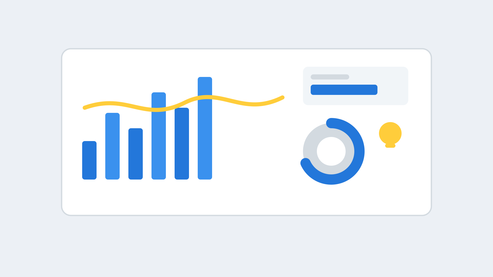

Analytics and Integrations
Know what is happening on every call, with live dashboards and links to over 200 CRM packages.
Akixi call analytics: see what is happening on every call
Akixi analytics gives you detailed call and contact statistics, live wallboards and alarms, so managers can see problems early and plan their teams.
- Hundreds of historic and real-time statistics
- Wallboards and alarms for busy teams
- Visibility of missed calls and call-backs
- Scales from small teams to thousands of users

Connect Horizon to the tools you use
Horizon works with over 200 CRM packages. Calls can open the customer record, and calls can be logged against it, so staff spend less time searching and typing.
- Works with Salesforce, Zoho, Bullhorn and many more
- Click to dial from your CRM
- Caller details shown as calls arrive
- Outlook call preview for your contacts

Everyday helpers
Receptionist console
A switchboard-style screen for reception, to see who is free and transfer calls fast.
Call recording
Record calls for quality and compliance. Availability depends on your tier.
Call reporting
Reports on volumes, answer times and missed calls to manage your teams.
Number and routing control
Change routing and numbers in the web portal when plans change.
Monitoring
Keep an eye on extensions and live calls without extra hardware.
Open tools
APIs and integrations so Horizon can fit your own processes.
Some analytics, recording and CRM features depend on your tier or are add-ons. We confirm them when we quote.
How a Horizon project works with Extera
We handle the planning and the paperwork, and stay on hand once you are live.
Discuss
We learn how your team works, where they work and what you use today.
Design
We recommend the Horizon package, handsets and apps, and quote clearly.
Move
We port your numbers, set up users and train your team.
Support
Extera is your first call for changes, faults and new starters.
Extera is based in Banbury, Oxfordshire. You get one team for your phones, your connectivity and your mobiles, instead of chasing several suppliers.
Horizon analytics FAQs
What is Akixi?
A call and contact analytics tool that works with Horizon, giving historic and real-time statistics, wallboards and alarms.
Does Horizon work with my CRM?
Probably. Horizon works with over 200 CRM packages, and we can check yours.
Is call recording included?
It is available on some tiers. We confirm what your package includes.
Can reception see who is available?
Yes, the receptionist console shows availability and lets staff transfer quickly.
More about Gamma Horizon
Apps and collaboration
Collaborate, a mobile app and a browser client, so staff can work from anywhere.
Read more →Microsoft Teams and Webex
Add Horizon calling to Microsoft Teams, or choose Horizon with Webex for one collaboration platform.
Read more →Talk to us about Horizon
Tell us which systems you use and we will plan the integrations.